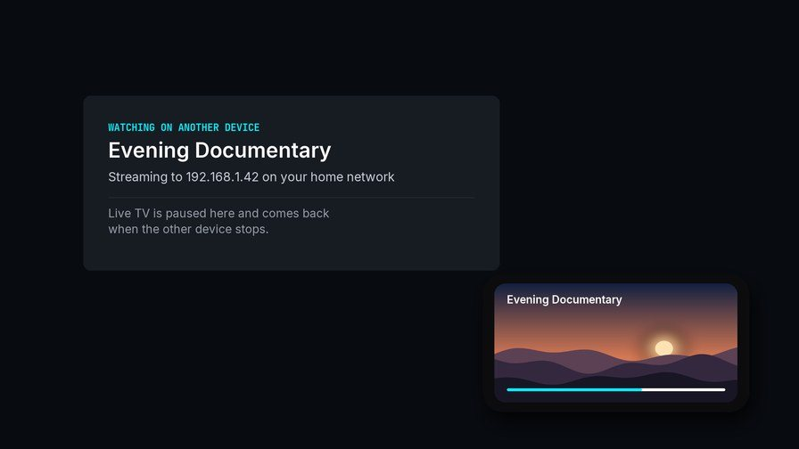
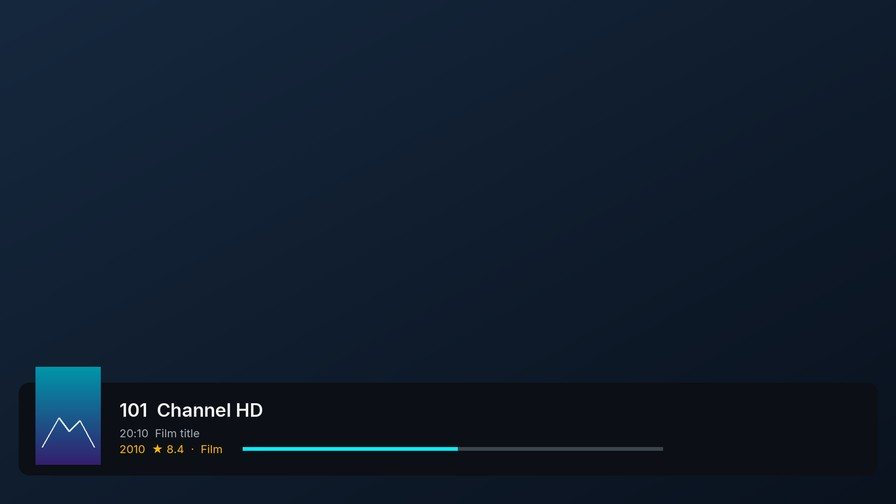

1.0.5
- Separate Now and Next artwork in the second infobar, in every style (mohamedothman)
- Text cards stay full width when there is no artwork
A dark, modern 1080p skin for OpenATV, OpenPLi and other enigma2 images. Pick a style, add the free Obsidian apps, and change the look from the remote. No PC needed.
wget -qO- https://raw.githubusercontent.com/dali44g/Obsidian-FHD/main/install.sh | sh

Switch in MENU › Obsidian Apps › Styles. Classic and Floating come with the skin; the others are small style packs you download from the same screen.

Classic: the original Obsidian look, black with cyan accents.
Menus, channel list and infobar can each use a different style. How to switch styles ›
Install them from MENU › Obsidian Apps. Each one is optional, has its own updates and removes cleanly. Click an app for its guide.

Film and series posters with ratings in the infobars, with separate Now and Next artwork.

Watch this receiver's channels on your phone, tablet or another TV at home, in an IPTV app.

A shortcut strip over live TV: guide, timers, recordings, audio and subtitle cards, your apps.

Prayer times of your mosque on the TV, with the next prayer countdown.

Show photos from your phone on the TV. Scan a QR code, no app to install.

Subtitles for channels that have none, from the channel's speech, in English, French or Arabic.

Today's weather and a 5-day forecast in the infobar, with OAWeather (OAWeather-Pli on OpenPLi).

Keep the time on screen while watching TV. Choose the design, position, size and colour.

Live video and audio bitrate of the channel, under the clock or in the infobar.
Use SSH or Telnet (PuTTY on Windows) to your receiver's IP address, user root.
The installer picks the latest release and checks free space first. Run it again later to update.
MENU › Setup › System › User interface › Skin, pick Obsidian-FHD, then OK.
wget -qO- https://raw.githubusercontent.com/dali44g/Obsidian-FHD/main/install.sh | sh
Prefer files? Download the .ipk from the latest release, copy it to /tmp and run opkg install.
Something wrong? See Help, open an issue on GitHub or post in the forum thread. Reporters are credited in the changelog.
A film or series poster, its rating and a short plot, shown with the infobar. The poster follows the programme: Now and Next each get their own artwork in the second infobar.
Needs internet, a free TMDB key and a USB or hard disk with 100 MB free: posters never go to the receiver's flash. Not endorsed by TMDB.

Labels are shown on the receiver in your menu language.
Fixed in 1.0.4 for images that run from the hard disk (OpenMultiboot, EgamiBoot, NeoBoot). Update Posters from Obsidian Apps.
Posters need a programme guide with a title the film database knows. News, sport and live shows never get one; the infobar then shows the picon.
Copy the API key (not the access token) from themoviedb.org › Settings › API and enter it again.
Your receiver becomes an IPTV server for your home: add it in TiviMate or IPTV Smarters (Xtream Codes login) or paste its M3U link in VLC, with the TV guide and picons.
Home network only, one device at a time: live TV pauses on the receiver while a device watches. Tested with IPTV channels; satellite, cable and terrestrial are not tested yet.
Labels are shown on the receiver in your menu language.
Use the same home network (not a guest Wi-Fi). After 5 wrong passwords the device waits 1 minute. On iPhone, allow Local Network for the app in Settings › Privacy & Security.
Another device is watching, or OK was pressed a moment ago (the device is refused for the time you set).
Refresh the playlist in the IPTV app after adding or renaming bouquets.
Open the Dock with a long OK on live TV and jump to what you use most. It follows your style, or pick the Glass or Depth look.
Needs nothing else: no internet, no drive.
Labels are shown on the receiver in your menu language.
The image has no screen for that shortcut (for example Teletext). Pick another one for that place.
Another plugin may use it. Set Open with to Blue or Long Blue.
Your mosque's prayer times from mawaqit.net, with reminders before the adhan, iqama alerts and an optional full-screen display mode.
Needs internet and a free mawaqit.net account. Not made by MAWAQIT.
Labels are shown on the receiver in your menu language.
Fixed in 1.1.2 for receivers connected by cable. Update Mawaqit from Obsidian Apps.
Check that the right mosque is chosen in Mosque, then press OK on the main screen to refresh.
Send a photo from your phone to the TV: scan the code, choose a photo and press Send to TV. Photos stay in your house.
Needs a phone on the same home network. The photo on screen is kept in memory only; GREEN saves it to a USB or hard disk.
Labels are shown on the receiver in your menu language.
The phone must be on the same home network as the receiver (not a guest Wi-Fi or mobile data).
Fixed in 1.0.2 for images that run from the hard disk (multiboot). Update Cast from Obsidian Apps.
Subtitles for channels that have none. The receiver listens to the channel, a speech server turns it into text, translated into English, French or Arabic if you want. When a channel sends its own subtitles, they are used instead.
Needs ffmpeg (installed with the app) and a speech server: a free Groq key (cloud) or Docker on a PC at home.
192.168.1.20:8000. Don't have the PC server yet? Set it up ›Privacy: with Groq, short clips of the channel's sound go to Groq. With your PC, sound and text stay at home. The Groq key is kept in a file only the system can read and never appears in the log.
Only needed if you choose Your PC. With a free Groq key you can skip this section.
| Groq (cloud) | Your PC | |
|---|---|---|
| Setup | A free key, 2 minutes | Docker on a PC, about 20 minutes |
| Privacy | The channel's sound goes to Groq | Everything stays at home |
| Limits | Hourly and daily limits | None, but the PC must stay on |
You need a PC on the same home network as the receiver, with about 3 GB free. A 4-core PC from the last 8 years is enough.
docker run -d --name speaches --restart unless-stopped -p 8000:8000 -e WHISPER__COMPUTE_TYPE=int8 -v hf-hub-cache:/home/ubuntu/.cache/huggingface/hub ghcr.io/speaches-ai/speaches:latest-cpu@sha256:21e3df06d842fb7802ab470dd77c25f0e8c0d22950e8d8c6ae886e851af53ef8
docker run -d --name libretranslate --restart unless-stopped -p 5000:5000 -e LT_LOAD_ONLY=en,fr,ar libretranslate/libretranslate
ipconfig and note the IPv4 Address; on a Mac, System Settings › Network; on Linux, hostname -I. Example: 192.168.1.20. If Windows asks about the firewall, allow access on Private networks.On the receiver: Live Subtitles › YELLOW › Speech server = Your PC, PC address = the address plus :8000, for example 192.168.1.20:8000. Press OK to test: the first test downloads the speech model (about 480 MB), so give it a few minutes.
After a PC restart, open Docker Desktop: the servers start again by themselves. Keep these ports on your home network only, never open them to the internet.
Labels are shown on the receiver in your menu language.
The free Groq plan has hourly and daily limits. Subtitles come back by themselves; a second free key takes over at once. A PC server has no limit.
Short drops are not seen. After a longer one the channel plays without subtitles and they come back by themselves.
The line under the tiles says what: the PC address, the Groq key or ffmpeg. BLUE opens the log, BLUE again shows a QR code to send it.
wsl --install (or wsl --update), then restart the PC.Today's weather and the 5-day forecast at the top of the infobar, in the skin's style. Part of the skin, it only needs the OAWeather plugin.
Needs the OAWeather plugin and internet.
Labels are shown on the receiver in your menu language.
Since 1.8.0 the skin falls back to the city or your configured location when the provider gives no observation point. Select and save your location in OAWeather.
Keep the time on screen while watching TV, in the Minimal, Flip or Stacked design. Part of the skin, nothing else to install.
Needs nothing else: no internet, no plugin.
Labels are shown on the receiver in your menu language.
If the separate Permanent Clock plugin is on, turn it off. The Obsidian skin must be the active skin.
The video and audio bitrate of the channel, under the clock or in the infobar. Part of the skin, it only needs a bitrate plugin.
Needs BitrateViewer, or OpenPLi's Bitrate plugin. Works on satellite, cable and terrestrial channels.
Labels are shown on the receiver in your menu language.
Bitrate is measured from the tuner, so it works on satellite, cable and terrestrial channels only.
Short guides for the skin itself. Each app has its own page with install, settings and troubleshooting.
The one-line installer, installing an .ipk by hand, and updating without losing your settings.
Switch the menus, channel list and infobar, download packs, and go back to Classic.
What is tested, what works without a test box, and image-specific notes.
The questions that come up most in the forum.
Guides are being written. The app pages and the forum thread answer most questions in the meantime.